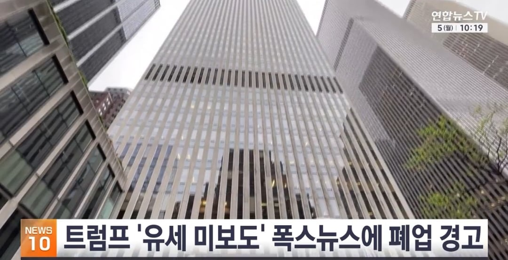

트럼프 대통령은 현지시간 4일 트루스소셜을 통해 폭스뉴스가 자신의 중간선거 유세 현장을 제대로 보도하지 않아 "슬프다"며 보도하지 않으면 지지자들이 폭스뉴스를 시청하지 않을 것이라고 경고했습니다.
그러면서 "폭스뉴스는 과거에도 이러한 행동을 시도하다 거의 폐업할 뻔했고, 항상 선거 직전이었다"며 그런 일이 다시 일어날 수 있다"고 압박했습니다

트럼프 대통령은 현지시간 4일 트루스소셜을 통해 폭스뉴스가 자신의 중간선거 유세 현장을 제대로 보도하지 않아 "슬프다"며 보도하지 않으면 지지자들이 폭스뉴스를 시청하지 않을 것이라고 경고했습니다.
그러면서 "폭스뉴스는 과거에도 이러한 행동을 시도하다 거의 폐업할 뻔했고, 항상 선거 직전이었다"며 그런 일이 다시 일어날 수 있다"고 압박했습니다
멘헤라 노머고
폭스가 그나마 노머고에 제일 우호적인곳 아니였나..?
노머고가 언론 출입 통제하니까 언론 자유 쪽에 좀 더 힘 실어 주려고 폭스도 반대햇음 그랴서 사이 나빠짐
언론을 전부 적으로 만드네 무슨 생각이지
게헤엄!
생각이 있겠냐
내유세라고 써있어서 무슨 보유세같이 세금인줄알았네 ㅋㅋㅋ 띄어쓰기 안하냐
용비어천가 언론을 가지고 싶은건가?
선진국에서 이 무슨 ㅋㅋㅋ 영화같네
피를 토하는 심정으로
저따위인데 지지율 37프로가 나오고있는게 신기하다
자치령 방위군이다 이 방송을 즉각중단한다!
진짜 골 때리는 새끼네